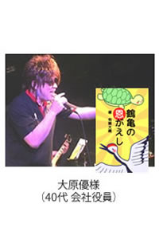

| 電子出版のための企画と原稿構成を考える～立ち読み機能と販促ツールのご紹介～: はじめての方でもよくわかる！電子出版するためのティップス集その６（簡易読みきり版） 【はじめての電子書籍出版ティップス集】 | |
| 川口 浩治 | |
| BESTPAGE (2015) | |
本書の内容について
本書の内容は、電子書籍や電子書籍の市場、Ｋｉｎｄｌｅ本の特徴やＫＤＰシステムの利用方法、本の企画の立て方や文章制作方法、そして、電子出版・販売のノウハウなど、電子書籍出版に関する基本的な内容をまとめさせていただきました。
そのため、既にＫｉｎｄｌｅ書籍をご出版されている方には、知っている情報も多く含まれるかと思われますので、予め、ご了承の程、何卒よろしくお願い致します。ただ、これから出版をされたい方や電子書籍初心者の方にとっては、為になる情報や役に立つ情報もあるかと思います。
また、本書は気軽に読んでいただけるように、文量は１０，０００文字以内となっております。
少しでも本書の内容が、読者様のお役に立てれば非常に嬉しく思います。
※シリーズ本のご紹介（一部）
- 『Ｋｉｎｄｌｅ出版ってどうなの？～アマゾンキンドルの魅力～』～はじめての電子書籍出版ティップス集その１～
- 『ＫｉｎｄｌｅとＫＤＰの話～ユーザーと著者にとってのメリットとは？～』～はじめての電子書籍出版ティップス集その２～
- 『紙の本と電子書籍の違い～基本フォーマットとこれからの出版ビジネスについて～』～はじめての電子書籍出版ティップス集その３～
・・・など。
※その他、多数出版
～はじめての電子書籍出版ティップス集その６～
電子出版のための企画と原稿構成を考える～立ち読み機能と販促ツールのご紹介～
※簡易読みきり版
電子出版準備：企画書を作ってみよう。
電子書籍を作成するには、原稿が必要です。その原稿を作るための元になるのが、企画書です 。
「原稿を書くだけでも大変なのに、わざわざ企画書を作るなんて大変そうだな・・・」と思われた方もいるかもしれません。
企画書 と大げさに言っても、誰かに説明するために何十枚も書類を用意する必要という訳ではなく、 自分の考えをまとめるため に作る のです。極端なことを言うと、自分だけが分かればいいので、企画書は、Ａ４のコピー用紙一枚でもかまいません。（いきなり原稿を書き始めると、内容が支離滅裂になってしまったり、途中で何を書けばいいか分からなくなってしまうため、はじめに企画書を用意しておくことは大切なことです。）
ここでは、どんな内容を考えて、企画書を作ればいいのか、企画書を作るうえでのチェックポイントをご紹介します。
１）仮タイトル
おそらく、本を執筆したいと思った方であれば、どんな本を書きたいのかは、おぼろげながら頭にあると思います。
そこで、まずは、仮にタイトルを決めてしまいます。もちろん、このタイトルは後で変更になっても構いません。（おそらく、最初に考えたタイトルは原稿を執筆していくうちに変更されることになると思います。）
ただ、先にタイトルを考えることで、その後、書籍の内容や構成が思いつきやすくなりますので、まず、仮のタイトルを考えてしまいます。
タイトルのポイントは、 本の内容が、一目でわかり、読者にインパクトを与えることができるタイトル をつけるようにしましょう。
２）サブタイトル
次に、本の内容をより明確にして、より詳しくするために、サブタイトルを決めておきます。こちらも、原稿が進んでから変更しても構いません。
３）企画趣旨
次に、「この本を読んだ読者にどうなってほしいのか？ 」ということを考えます。
要するに、あなたが本を書く理由を明確にしておくのです。読者に、感動してもらいたいのか？あるいは、為になったと思ってもらいたいのか？読者が、あなたの本を読む前と読んだ後では、読者の何が変わるのか？そのあたりを明確にしておきましょう。
そして、あなたは、この目的を達成するために、いまから本を書くのです 。途中でこの目的を忘れてしまわないように、企画趣旨を明確にしておきましょう。
４）価格
だいたいいくらくらいで販売したいのか？目安でもいいので、価格を決めておきましょう。※価格の見当がつかない場合は、Ｋｉｎｄｌｅストアで類似の書籍を検索して、価格帯を把握してもいいと思います。また、電子書籍の場合は、出版後でも自由に価格変更ができるので、気楽に考えても大丈夫です。
５）読者ターゲット
どんな人に本を読んでもらいたいのか？（たとえば、年齢は？職業は？性別は？）
本を読んでもらいたい読者層を明確にすることで、本のタイトルや内容なども深く考慮することができるようになります。
６）書籍全体の構成案
最後に全体の構成案を作ります。ここも、最初の段階では、おおよそで構いません。だいたい何章立ての本なのかを決めておくと、今後の原稿の進み具合が明確になります。
電子書籍の企画書といっても、最初は、この６つのポイントが書かれていれば十分だと思います。（この内容が明確になれば、本を作るのがよりいっそう楽しくなってきます。ぜひ、お試しいただければと思います。）
全体の構成を考える
先の６つの項目を明確にすることで、自分がどんな本が書きたいのか、よりイメージが湧いてきたと思います。
ここからは、出てきたイメージをもっと具体的にするために、実際の本の構成部分についてどのように進めていけばいいのかをご紹介します。
本の構成を考えるうえで、一番一般的な方法は、要素を箇条書きにすることです 。
ポイントは、最初から章立てを考えるのではなく、とりあえず、思いついたものからでいいので、紙やパソコン上に書いて行ってください。
その書き出した項目を後で、並べ替えたり、削除したり、追加したりして、構成を練っていきます。この作業は、ある程度慣れてくれば、素早くできるようになりますが、最初は、繰り返し検討していき、よりブラッシュアップするようにしましょう。
また、一点、電子書籍特有のポイントとしてのご説明を付け加えると、 電子書籍は、冒頭の部分が、サンプルとして読むことができます 。
そして、読者は、冒頭部分を読んで、この本を買うかどうかを判断します。
つまり、冒頭部分に、読者を惹きつけられるような印象的なエピソードや、ストーリーを盛り込むと出版後の売上も変わってきます。たとえば、写真集の出版であれば、最初の方に、一番魅力的な写真を入れるなど、工夫をすることが一つのポイントにもなります。
構成については、何度も何度も見直し、検討を繰り返すことで、よりよい作品を作ることができますので、是非頑張ってください。
Ｋｉｎｄｌｅストアでは冒頭１０％まで読める
通常、書店で紙の本を選ぶ場合、ほとんど方は、中身をパラパラとめくって立ち読みをすると思います。
立ち読みをすることで、あとでじっくり読むために購入するかどうかを見定めます。（また、書店にはいろいろな書籍が置いてあるので、自分の知らなかった本を見つけることも楽しみのひとつだと思います。）
しかし、電子書籍の場合は、書店で行ういわゆる"立ち読み行為"ができません。
そのため、電子書店では、立ち読み行為の代わりに、無料ダウンロードという形でサービス提供してくれているところが多いのです。
たとえば、Ｋｉｎｄｌｅストアであれば、購入ボタンのすぐ下に、【無料サンプルの送信】 というボタンが設置されています。このボタンを押せば、Ｋｉｎｄｌｅに登録している端末に、書籍の冒頭部分が送信され、実際に内容の一部を確認することができます。
もちろん、紙の本とは違って、物理的な書籍が存在するわけではないので、実際の書店と同様の立ち読みができるとまでは言えませんが、ユーザーが中身を読む機能が実装されているのは、ありがたいことだと思います。
また、先にお伝えしたとおり、この点を、著者目線で見ると、本を出版する場合は、
冒頭に１０％にも読者の興味を引く内容を盛り込む
ことで、書籍を購入してくれる可能性が上がるということになります。（これは、電子書籍の販売数を伸ばす、ひとつのテクニックとなるので、是非覚えておいてください。）
※また、ホームページやブログをお持ちの場合は、アマゾンから提供されているタグを使用すると、書籍冒頭部分を自分のサイトへ埋め込むこともできます。（こちらの詳細については、また別にご紹介させていただきます。）
価格設定と販売戦略を考える
通常、電子書籍は、紙の本よりも安いイメージがあると思います。
これは、出版社がＡｍａｚｏｎなどでセールをすることが多いから、安いというイメージを持たれているのかもしれません。
以前のゴールデンウィークでも、多くのコミックの第一巻が９９円で購入できるセールを大々的にやっておりました。このようなセールをうまく活用できれば、本を大幅な安価で購入することができます。
ただ、このような価格調整は、国内の場合、出版社が定めるケースがほとんどですので、紙の書籍とそんなに変わらないケースもあります。（商業出版された書籍の場合、それぞれの出版社の思惑がありますので。）
また、自分で電子書籍を出版された場合などは、価格も、販売予定日も、ロイヤリティの選択も、すべて自分で自由で決められます 。そのため、商売における価格戦略や販売戦略を考えて販売する面白さもあります。
例えば、最初は価格を低めに設定しておき、レビューや評価が高まってきたら、だんだんと値上げをしていく というようなマーケティングも可能となります。
また、Ｋｉｎｄｌｅストアには、無料キャンペーンや、Ｋｉｎｄｌｅ Ｃｏｕｎｔｄｏｗｎ Ｄｅａｌｓといった、販売促進方法もＡｍａｚｏｎＫＤＰで提供されていますので、このようなサービスを利用して、販売促進を設定することができます。特に出版した後には、無料キャンペーンをガンガンやった方が、書籍のアピールに役立つのでおすすめです。
ソーシャルリーディングとＳＮＳ
電子書籍の特徴の一つとして、ソーシャルリーディングというものがあります。
ソーシャルメディアという言葉は聞いたことがあると思いますが、ソーシャルリーディングという言葉は、まだまだ認知度が低いと思います。ちなみに、ソーシャルメディアとは、ＴｗｉｔｔｅｒやＦａｃｅｂｏｏｋなどの人との繋がりをサービスの中核においているサービスを指します。
一方、ソーシャルリーディングとは、読者同士で読書体験を共有できるサービスのことを言います。
ソーシャルリーディングのポイントは、読者間の共有です 。この情報共有により、他人との繋がりを意識して、書籍を読むことができます。読者のメリットとしては、読書の楽しみ方が広がったり、自分が好きな本や書籍の内容のポイントなどの共有ができます。
たとえば、電子書籍端末で最も有名なＫｉｎｄｌｅでは、"ポピュラーハイライト"という機能があります。
この機能は、Ｋｉｎｄｌｅ本につけたマーカーのハイライト部分を、同じ電子書籍を読んでいる読者同士で共有できるものです。この機能によって、同じ本を買った人は、どのような箇所に興味関心を示しているのかが良く分かります。(※もちろん、設定によっては、表示させないこともできます。)また、ハイライトを付けた部分をＦａｃｅｂｏｏｋやＴｗｉｔｔｅｒで共有することができます。
このように、読書体験の共有が簡単にできるのは、ソーシャルリーディングの特徴です。ソーシャルリーディングは、今後もサービス内容のさまざまなものが出てくると思います。そして、そのうちに、ソーシャルリーディングの概念も広まっていくと思いますので、読者はもちろん、著者にとっても多くのメリットがあると思います。
ソーシャルネットワークサービスと電子書籍
続いて、ソーシャルネットワークサービス（ＳＮＳ）と電子書籍の関係についてご紹介させていただきます。
通常、紙の本であれば、書店に足を運ぶとさまざまな本が置いてあるので、気になる本を実際に手に取ってみたり、思いもしなかった本に出会うことがあります。このような体験は、電子書籍ストアでは、まだまだ難しいものがあります。
電子書籍で良い本に出会う方法としてあげられるのが、ＴｗｉｔｔｅｒやＦａｃｅｂｏｏｋでのＳＮＳの情報です。（要するに口コミです。）最近では、ＴｗｉｔｔｅｒやＦａｃｅｂｏｏｋで「この本が面白かった。」 などの投稿をしている方も少なくありません。
しかも、ＳＮＳの特徴としては、すぐに拡散ができるということです。このようなネット上の口コミ効果で、良書に出会う可能性も多く存在します。紙の本のように、書店で本を探すという体験はできませんが、ＴｗｉｔｔｅｒやＦａｃｅｂｏｏｋなどのＳＮＳを利用して、多くの方から情報を集めることができます。
一方、著者の目線からソーシャルメディアを活用することもできます。
簡単な例では、ＴｗｉｔｔｅｒやＦａｃｅｂｏｏｋをやっている方であれば、そのツールを使って、自分の本の存在を多くの方に知らせることができます。
口コミは、有効なマーケティング手法であるため、うまくやれば、ＴｗｉｔｔｅｒやＦａｃｅｂｏｏｋを活用してまったく費用をかけずに、広告することも可能になります。（もちろん、本の内容が良くなければ、口コミは広がりません。）
良い本であれば、多くの人が拡散してくれるようになり、また、Ａｍａｚｏｎのランキングも上がり、より多くの人が本を購入してくれる、相乗効果も期待することができます。
もちろん、ただ単に、「この本を買ってください。 」と言っても、ＳＮＳユーザーが、簡単に購入してくれるわけではありませんが、販売促進ツールとして賢く利用することは、非常に有効です。
まだＴｗｉｔｔｅｒやＦａｃｅｂｏｏｋのアカウントを持っていない方は、Ｋｉｎｄｌｅ書籍の出版と同時にそれらのツールも使えるようになっていただければと思います。
ご参考：販促ツール≪Ｋｉｎｄｌｅ Ｃｏｕｎｔｄｏｗｎ Ｄｅａｌｓ≫について
２０１３年１１月１日に、アマゾンＫｉｎｄｌｅ書籍に新しい販売促進ツールが導入されました。
この販売促進ツールは、「Ｋｉｎｄｌｅ Ｃｏｕｎｔｄｏｗｎ Ｄｅａｌｓ」というもので、本の売上拡大をサポートするＫＤＰセレクトの新しいキャンペーンツールです。
具体的には、期間限定のディスカウントキャンペーンを設定して、ディスカウント情報とその価格で購入できる残り時間が提示できるものです。
※ただし、残念ながら、現在、日本のアマゾン(Ａｍａｚｏｎ.ｃｏ.ｊｐ)ので実施はできないようです。現在利用できるサイトは、Ａｍａｚｏｎ.ｃｏｍと Ａｍａｚｏｎ.ｃｏ.ｕｋ のみとなっております。とても有効な販売促進システムなので、いずれは、日本でも実施できるようになるかと思います。
ちなみに、Ｋｉｎｄｌｅ Ｃｏｕｎｔｄｏｗｎ Ｄｅａｌｓの実施方法を下記にご案内させていただきます。(日本のサイトでは、まだ実施できませんが、アメリカとイギリスサイトには適用できます。)
利用方法としては、Ａｍａｚｏｎ ＫＤＰにログインして、本棚にある書籍をクリックすると、管理画面にオプションの『ＫＤＰセレクトの利点』という項目をクリックします。
すると、ＫＤＰセレクトの設定画面が表示されますので、このページでＫｉｎｄｌｅ Ｃｏｕｎｔｄｏｗｎ Ｄｅａｌｓのキャンペーンの設定を行なえます。
※設定画面では、キャンペーン開始日時と終了日時を設定し、価格増加の回数と開始価格などの細かい条件を設定します。
また、このキャンペーンは、次の３つの条件を満たしていれば、９０日のＫＤＰセレクト登録期間毎に１回ご利用できます。
その条件とは、下記の３つの条件となります。
１）少なくとも３０日間、ＫＤＰセレクトに登録されていること
２）少なくとも３０日間、電子版の希望小売価格を変更していないこと
３）電子版の希望小売価格が＄２．９９から＄２４．９９の間であること（Ａｍａｚｏｎ.ｃｏ.ｕｋの場合は￡１.９３から￡１４．９９）
※また、最後に、Ｋｉｎｄｌｅ Ｃｏｕｎｔｄｏｗｎ Ｄｅａｌｓのキャンペーンの利用に関するご注意点を、下記に記させていただきます。
- Ｋｉｎｄｌｅ Ｃｏｕｎｔｄｏｗｎ Ｄｅａｌは７日間まで実施できる。
- Ｋｉｎｄｌｅ Ｃｏｕｎｔｄｏｗｎ Ｄｅａｌを実施するには、書籍をＫＤＰセレクトに登録する必要があり、３０日間は価格を変更できない。
- Ｋｉｎｄｌｅ Ｃｏｕｎｔｄｏｗｎ Ｄｅａｌｓの書籍は、キャンペーン終了後、最低１４日間はＫＤＰセレクトに登録しておく必要がある
▼その他ご参考情報はこちら
≪次巻のご案内≫
『売れる電子書籍を作るために最初に考えるべきこと～書籍のネタ集めとＫＤＰの活用術～』
～はじめての電子書籍出版ティップス集その７～
目次
- 売れる電子書籍を作るコツ
- 紙の書籍を参考にする
- さまざまな電子書籍を実際に購入してみよう！
- アイデアや経験、ノウハウをまとめて電子書籍を出版する
- 書籍のネタは考え方次第でいくらでも見つかる
- これまでのブログを最大限に活かす
- どんな方でも出版できるＫＤＰ
- 数十ページの本でもＫｉｎｄｌｅ本として出版できる
- 紙の書籍ではできなかった設定価格
- まずは短めの作品を試しに出版してみる
【著者紹介】
川口 浩治
～幼少期のころのお話～
東京都生まれ。とある八百屋の三男坊として生まれました。小さいころは、"末っ子"ということもあり、家族から"天使だ"ともてはやされました（笑）しかし、そんな天使に神様が、ちょっとした試練を与えることとなります。
移動販売式の八百屋だった両親は、毎日、トラックに野菜やくだものを載せて、近くの団地や集合住宅の方へ、野菜やくだものを売りに行っていました。
僕は小さいころ、そのトラックに乗って、よく仕事場までつれていってもらい、近くの団地の子供と一緒に遊んだりして楽しく過ごしていました。
ところが、僕が幼稚園に上がったころ、僕の身体にちょっとした異変がおこります。
最初にその異変に気付いたのは、僕の母でした。それは、どんな異変かと言うと、僕が普通に道を歩いていると、平坦な道でも、"なぜかよく転ぶのです。"
本当によく転びました。 (※母親に当時の様子を聞くと、本当によく転ぶから、最初は僕がふざけていると思っていたそうです（笑）
僕があまりにもよく転ぶので、『これはなんか変だ。』と母親が心配して、僕を病院に連れて行ってくれました。
そこで、僕の右足が、"ペルテス病"という重病にかかっていることが発覚します。
※ペルテス病とは、６歳前後の元気なお子様に発生しやすく、大腿骨頭に栄養を与えている血行がなんらかの理由により途絶え、同部が壊死となる疾患です。
そこから約２年、僕の右足に重たい鉄の器具（ギブス）を着けた生活が始まりました。
当時の僕は６歳くらい。
幼稚園に通っていたのですが、足に重たい鉄の塊を着けての初めての集団生活は結構きつかったです。
僕が歩くときは、「ガシャンガシャン」と音を立てて歩かざるをえませんでした。
もちろん、運動も満足にできない子供でした。友達からもからかわれたこともありました。
６歳くらいのお子さんがいらっしゃる方にはお分かりだと思いますが、この頃に"運動が出来ない"とか、"友達と違う"ということは明らかに致命的なことなのです。
周りの友達がサッカーをしたり、追いかけっこをしたりして遊んでいるのに、自分にはそれができない。とても惨めな思いをしたことを、今でも覚えております。
ただ、いいこともありました。
当時、八百屋をしていた父親に、『コージは足が悪いから、将来は身体を使った仕事はできないな。だから、勉強を頑張りなさい。』と言われたことです。
小学校にあがったばかりの僕は、自分の右足についている重たい足の補助器具を見ながら、
"うーん、確かに！！
と妙に納得して、勉強を頑張るようになりました（笑）
だから、学校の成績はいい方でした（笑）
ある意味、この足の病気のおかげで勉強を頑張ることになり、いつのまにか"学ぶこと自体"が好きになっていました。
～社会人の頃の話～
小さいころは、足の病気に悩まされたはものの、最高の家族と友人に恵まれ、順風満帆な学生生活を過ごすことができました。
そして、都内の理系大学を卒業し、晴れて社会人となります。
やる気と希望を持って、とあるマーケティング会社へ入社したのですが、入社当初は、同期や先輩との人間関係がうまくいかず、毎日、辛い日々を強いられました。
(※先輩からは、『殺す!』とか『使えない奴!』呼ばわれもしたりして、その言葉が、何度も何度も頭の中でエコーして眠れないこともありました。)
なんとなくモチベーションが下がってしまう自分に対して、『このままじゃまずい！このままじゃストレスでおかしくなっちゃう！』 と思い、 平日の夜や土日を使って、多くの本を読みあさり、セミナーにも参加するようになりました。
そして、セミナーや本から学んだことを実際に実践していき、徐々に自分の生活が変わり始めたことに気付き始めました。
例えば、セミナーや本から学んだことを応用して、独自の勉強法を確立し、国家資格を含むＩＴ関係の資格を一年間で９つ取得しました。
また、マーケティングの学習にも力を入れ、学んだノウハウを活用した結果、仕事で担当した製品の前年比売上３００％を達成させ、会社の高評価を取り続けることができました。
あるいは、平日の夜や休日の時間を使って制作したホームページから、独自のＷＥＢマーケティングを実施して、 毎月１００名以上の集客（資料請求やお問い合わせ）を継続的に取得できるようになりました。
この他にも、多くのマーケティング関係の本を読んだり、産業能率大学のマーケティング講座を受講したりと、マーケティングのスキルを磨き続けてきました。
～そして、現在～
その後、独立し、現在は、"自分が学んだ知識を少しでも世の中に役に立てたい！" と思い、ＷＥＢサービス提供事業者兼ＷＥＢマーケッターとして活動しています。
もちろん、現在も、いろいろなことに挑戦中ですし、日々勉強中です。（※勉強は、これからも一生続けていくつもりです。 ）そして、これからも、仕事を通じて様々な人と出会い、自分の周りの人と一緒に成長していけたら非常に嬉しいと思っています。
■著書
- 歯科医院のためのホームページ集客を成功させる８つのチェックポイント
- あなたのこころをほんの少しだけ明るくする３３のお話
- １度きりの人生。どうせなら、楽しく生きよう！～仕事や人間関係に役立つ２９の話～［気軽に読める哲学書］
- Ｋｉｎｄｌｅ出版ってどうなの？～アマゾンキンドルの魅力～: はじめての方でもよくわかる！電子出版するためのティップス集
他多数
Ｔｗｉｔｔｅｒ: https://twitter.com/koji050
Facebook: https://www.facebook.com/Koji4949
■ 個人ブログはこちら
ご提供サービスのご案内
本サービスをご利用した方のご感想
川口さんに申し込んでから１週間以内に電子書籍の出版が完了いたしました！迅速丁寧で、深く広い知識から的確なアドバイスと大変細かいお心使いを頂きまして大感激です！
今後も引き続き出版をお願いしたいと思っております。
本当にありがとうございます！
※追記 (２冊目のご出版に関するご感想)
２冊目の「利也子の日記 １」も約１週間で出版になりました。
表紙デザインも好評で大変光栄です。
今後もどうぞよろしくお願いいたします。
初めから最後まで懇切丁寧な対応で、また不勉強な質問や疑問にもその度ごとに辛抱強く教えて頂き、本当に助かりました。
料金形態も明瞭で、後から「こんなはずではなかった」とは一度も感じなくて済みました。
表紙のデザインも多様で、選ぶのも楽しかったです。
次回がありましたら、また必ずお願いすると思います。
自分の作品を電子書籍にしたいと思っている方は、相談だけでもされてみたら良いと思います。きっと頼りになってくれると思います。
質問してもいつも、迅速に回答していただき、とても信頼できると思いました。
原稿さえ書けば、あとは、ほとんどお任せなので、とても楽でした。表紙のデザインもとってもいい感じのものがたくさんで、しかもその中から選べて、楽しかったです。
全て、迅速で適切な対応で有難かったです。
私の校正漏れと、改行の統一とで再出版をして戴きましたが、あっという間に処理してもらえたので助かりました。
代行をお願いして正解でした。
自分のＰＣのスキルでは、出版作業はとても不可能だと思いました。今回、５１枚の手描きの挿絵を使用していただきましたが、サイズ、圧縮、加工等、細かいところまでお願いしたところ、全て快く、迅速に対応していただきました。
素晴らしい代行サービスだと思います。
お陰様で、思いで深い記念になりました。大感謝です。
非常に迅速かつきめ細やかなサービスで、質問には常に２４時間以内に返事をいただきました。
日本とカリフォルニア・サンディエゴ間のコミュニケーションでしたが、少しも不便を感じることなくすべての作業が順調に進みました。
ＫＤＰ及び著者ページまた販促ウェブの作成すべてお願いしました。表紙デザインは１４種類から選ぶことが出来て、固いタイトルをソフトにする効果絶大なものを選ぶことが出来ました。
電子図書の出版を考えている方に是非お勧めの会社です。
本当にありがとうございました。
質問に対するご回答や電子本作成が迅速だったので満足しています。
またツイッターやフェイスブックで電子本をご紹介頂きありがとうございました。
お世話になりました。
初めての電子書籍出版でしたが、対応が早くて大変助かりました。
デジタル時代にありがちな機械的な対応なく、気持ちよくお願いすることができました。

何も分からず、兎に角電子書籍を出版したかったので半信半疑で申込みしてみました。
川口さんはどんな質問にも的確にアドバイスして頂きスピードを持って対応して頂きお世辞ではなく本当に感謝しています。
出版代行サービスと言っても最初から最後までお世話して頂きました。
売れそうな販売促進ＷＥＢページも作成して頂きました。
是非！次回もお願いしたいと思っております。
本当にお世話になり、ありがとうございました。
今回、アマゾンＫｉｎｄｌｅ本を出版したいと思いつき調べましたところ、まずこちらの価格の安さに驚きました。他の代行業者は、１０倍の費用でも安いとうたっていましたので、正直サービス内容か何かで、大分手抜きなのかと最初思ってしまったほどでした。
しかし、川口さんのサポートは、今までの全てのサービスというカテゴリーの中で、最高のものでした。
私は年柄ネットには疎く、質問も申し訳ないほどさせていただきましたし、英語版の本をリリースさせていただきましたのでわからないことが多く恐縮しておりましたが、毎回の修正とアドバイスと対応が迅速かつ丁寧で、思いやりを感じるほどでした。
表紙デザインも、こんなに候補を作ってくださりと感激しましたし、想像以上の素晴らしい出来上がりとなりました。
質問に対する答えも明確で、ご自分でまだ不明な点はわざわざアマゾンまで問い合わせていただき、私にわかりやすく教えてくださいました。全く頭が下がる思いです。
自分の本がリリースされたという嬉しさもありますが、素晴らしい川口さんにお願いでき、本を形にしていただいた喜びもひとしおです。気持ちの良い、感動を与えるお仕事をされている数少ない方だと思います。
今後、アマゾンＫｉｎｄｌｅでの電子書籍は、ますますメジャーになっていくでしょう。しかし、やはりネット上での登録作業はハードルがあります。それをすぐにすべてやっていただけて、自分は載せたい内容を川口さんに送るだけ。自分ではまず無理で、途中で諦めてしまったでしょう。
何か出版したい内容がございましたら、迷わず川口さんをお勧めいたします。感謝の気持ちでいっぱいです。ありがとうございました。

はじめてのことばかりで、とても不安でしたが、親切丁寧な対応で たいへん助かりました。
すべての作業に、わかりやすいサンプルが用意されているので難しそうなことも簡単にできました。
表紙については２３種類もの中から選ぶことができ、１つに選ばなければならないことがもったいないくらいに良いデザインのものばかりでした。
次回の作品も準備しており、また川口さんにお願いしようと思っています！
初めての電子書籍出版をして良かったと思っています。始めは、紙書籍出版との違いに戸惑うこともありました。それも川口様のアドバイス・ご理解とで作業が進むうちに慣れてきました。出版までの時間も紙のようにかからず、費用も紙とは比較になりません。
一つだけ、著者としての注意点を。元原稿の提出前のチェックと校正は念入りにということ。編集者に余計なお手間をかけさせてしまいますので。
そして何より、電子書籍のメリットは世界中に配信できること。日本語で読める方なら、読者は世界中に広がります。これは感動的に嬉しいことです。
次の出版の際にもお願いしたいと思っています。

やり取りも丁寧で、迅速に対応していただきました。
表紙のデザインもお願いしたのですがデザイン案が非常に豊富で、良いものばかりだったことに驚きました。
迅速に対応して下さり助かりました。
表紙デザインの質も高く、複数より選択できるのが魅力でした。
出版をしたいのに時間がない方へ特におすすめ致します。
益々のご繁栄を心よりお祈りしております。ありがとうございました。
たいへん丁寧で誠意のある対応をしてくれるサービスです。
私は表紙や内容訂正、その他質問を数多く川口さんにしましたが、すべて誠実に返してくれました。
そして、電子書籍出版５日めにして、Ａｍａｚｏｎ売れ筋ランキング１位を獲得することができたのです。これは望外のことでした。クライアントや友人からの反応もすこぶる良好で、結果にたいへん満足しております。
次回出版時にも、またこのサービスを利用するつもりです。

原稿はできていたのですが、いざ、電子書籍で出版するとなると、決めなければいけないこと、設定などがたくさんあり、その時、わからないことに対して質問をすると、すぐに返信がありました。
そのどれもが丁寧で、適切な処理の仕方を教えてもらい、とても助かりました。特に、入力設定で、私が間違って入力したものに対して、すぐに適切に対応して下さったことに感謝しております。
また、ウェブの表紙デザインも２０件の中から１件を選んだのですが、どれも素敵で選ぶのに迷うものが多かったです。その中で、選んだ表紙に対して、もっと題の文字を大きくや、配置をこういう風に変えてほしいという、諸々のこちら側の要望を取り入れて修正してもらい、大変満足のいく表紙になりました。
とうとう電子出版として本の形になった時には、感慨深いものがありました。
そこまでなるまでに、川口氏の人柄と、ＩＴに関する知識の深さに大変、助けられました。本当にありがとうございました。
※ 本サービスに関するご質問などがございましたら、お気軽にお問い合わせいただければと思います。 →電子書籍出版代行サービスの詳細はこちら